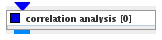
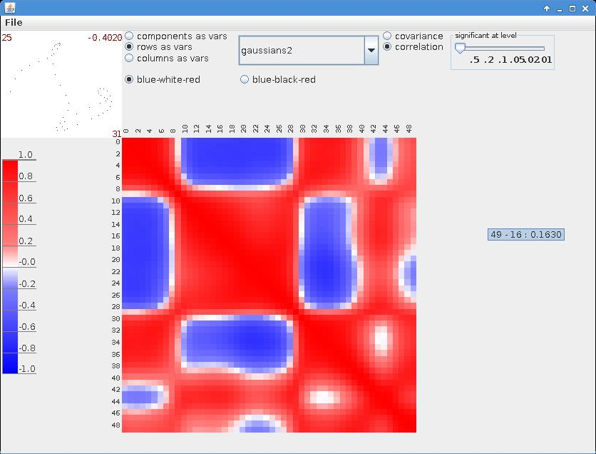
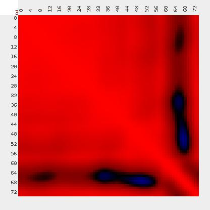
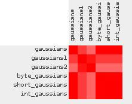
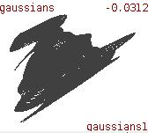

|
|
|

| input port | type | description | data acceptors |
|---|---|---|---|
| inField | VNField | ||
| output port | type | description | data schemas |
| outField | VNRegularField | Regular Field 2D with affine geometry |
Correlation Analysis
The module performs correlation analysis of input data.
Input data
Any data field.
Output data
A regular 2D field of correlation coefficients.
Computational parameters
In order to show the separate correlation analysis window click the show display frame button. By default the window is shown.

In a radio button menu the user chooses one of the following variables for the correlation analysis:
In the rows and columns case, a field component has to be chosen from a drop down list on the right hand side of the radio button menu.
A radio button menu allows the user to choose between covariance and correlation analysis. By default the correlation mode is used.

Correlation/covariance coefficients are presented in matrix form. Entries of the matrix are colored using the color map on the left hand side of the window. The user can choose between blue-white-red and blue-black-red color map.
If correlation entries do not meet the significance level defined in the significant at level slider in the above right corner of the window they appear in grey color.
Holding the mouse on the correlation coefficient matrix causes to appear a tool tip with variable names (in case of rows and columns their number) and their correlation/covariance coefficient according to mouse position.

Left mouse click onto the correlation/covariance coefficient matrix causes to appear a graph on the left upper corner of the window representing the relation of the values of the two variables according to the mouse position, the names of the variables and the correlation/covariation coefficient.
Middle mouse scrolling on the correlation matrix zooms in and out.
Mouse dragging horizontally or vertically translates matrix entries in the appropriate direction.
Middle and right mouse click onto the correlation matrix cancels all matrix transformations.
A radio button menu allows the user to choose between covariance and correlation analysis. By default the correlation mode is used.
Presentation parameters
Presentation tab contents are described in the common interfaces section unter the Presentation Panel entry.